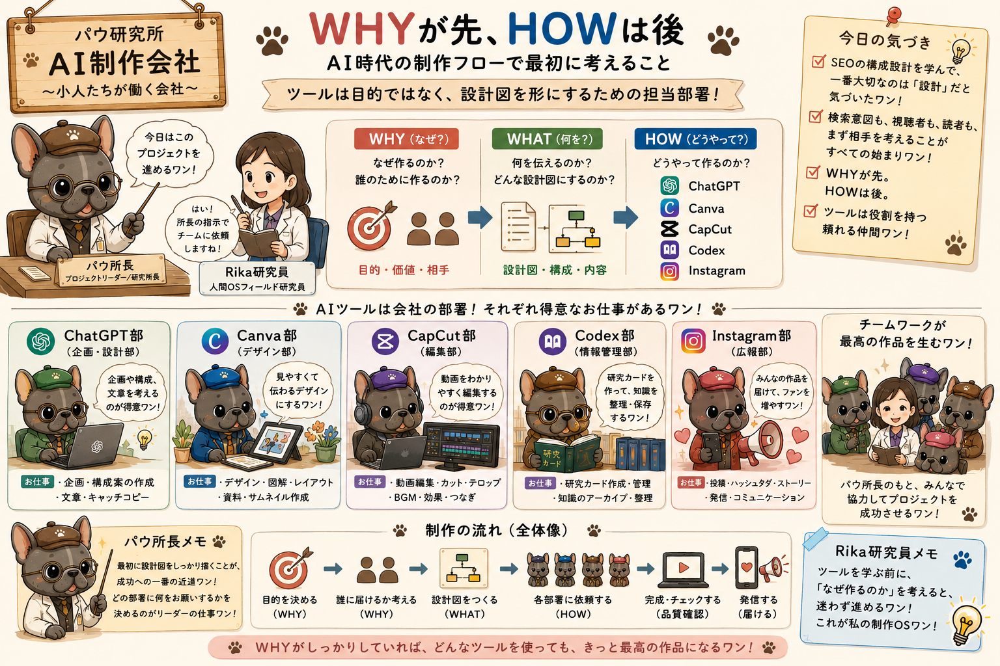

完成品だけでなく、考え方が変わった瞬間も
ここに置いてあるものは、完成品だけではなく、考え方が変わった瞬間や、うまくいかなかった試作も含まれています。
PAW HUMAN OS LAB
AIツールの学習、制作フローの発見、ChatGPTとの対話、図解、音楽ログを収蔵する個人研究棚。 メインページは入口にして、各ログは独立カードとして読めるように整理しています。
最新ログを見るAbout This Shelf
Rika Creative Codexは、完成した答えを並べる場所ではありません。 AI学習の途中で生まれた問い、気づき、試行錯誤、対話、図解、制作ログを、あとからたどれる形で少しずつ収蔵していく小さな研究棚です。
ここに置いてあるものは、完成品だけではなく、考え方が変わった瞬間や、うまくいかなかった試作も含まれています。
このCodexは、知識を集めるだけの棚ではありません。知識が体験へ、体験が気づきへ変わる過程も残していきます。
研究所は、正解を並べる場所じゃないワン。問いや気づきを育てる、小さな研究棚だワン！
Featured Learning Log｜2026.07.09
AI活用に関するウェビナーに参加したことで、自分なりに進めてきた学習スタイル、ChatGPTとの対話、パウ研究所の世界観、そしてCodexに知識を残していく意味が少しつながって見えた日の記録です。
企業向けAI活用やナレッジ蓄積の話を、個人の学び方、パウ研究所、Codexの知識資産化とつなげて整理した7月9日の中心ログ。
詳細ページを見るLearning Log Shelf
メインページは目次として使い、各ログは独立ページで読めるようにしています。 長いスクロールではなく、カードから必要な研究ログへ移動する形に整理しました。
ウェビナー参加、ChatGPTとの対話、パウ研究所の世界観、Codexのナレッジベース化がつながった中心ログ。
開くCanvaアプリ接続、スライド品質、プロンプト設計、ハイパーバイブプロンプトの気づきを整理したログ。
開く検索意図、相手視点、WHY → WHAT → HOWの制作フローを、個人的な受講メモとして柔らかく整理したログ。
開くAIエージェント、RAG、MCPなどの専門用語をパウ研究所の住人として翻訳するLearning OSログ。
開くResearch Cards
企業向けAI活用で出てきた「領域」という言葉を、パウ研究所の担当範囲として翻訳したカード。
開くナレッジは学んだこと、ノウハウは試して身についたこと。インプットとアウトプットの往復を整理したカード。
開くAIツールを万能の一人ではなく、それぞれ得意分野を持つ部署として使い分ける制作OSの考え方。
ツールの操作方法より先に、なぜ作るのか、誰に届けるのか、何を伝えるのかを設計する考え方。
Music Shelf
Sunoで作った曲は、完成品としてだけでなく、その曲を作った背景や、AI学習とのつながりも一緒に残していきます。
Visual Log
完成した作品だけでなく、学習中に作った図解、生成画像、試作カット、ボツ案もログとして残します。

AIツールを会社の部署として捉える図解。
専門用語をパウ研究所の住人に置き換える図解シリーズ。
情報、翻訳、理解、実践、知識資産、Codex収蔵の流れ。
Learning OS
AI学習では、知識を「評価されるためのもの」ではなく、自分を助ける道具として扱いたい。 間違えないために学ぶのではなく、試しながら、自分の世界を少しずつ広げるために学ぶ。
受け取る → ChatGPTと対話する → 自分の世界へ翻訳する → 試す → 図解や制作物にする → Codexへ残す。
学びは、覚えて終わりじゃないワン。使って、残して、未来の自分を助ける道具にするワン！
Update Log
Canvaログ、SEOログ、ウェビナーLearning OSログを独立ページにし、メインページからカードで移動できるように整理しました。
メインページから「ウェビナー参加から見えたLearning OS」へ移動できるようにしました。
Sunoで制作したパウ研究所テーマソングと夫のロボット愛スピンオフ曲の学習ログへ移動できるようにしました。
スライド品質、プロンプト設計、Canva連携確認をCodexへ収蔵しました。
検索意図、WHY → WHAT → HOW、AIツールは会社の部署という気づきをCodexへ収蔵しました。